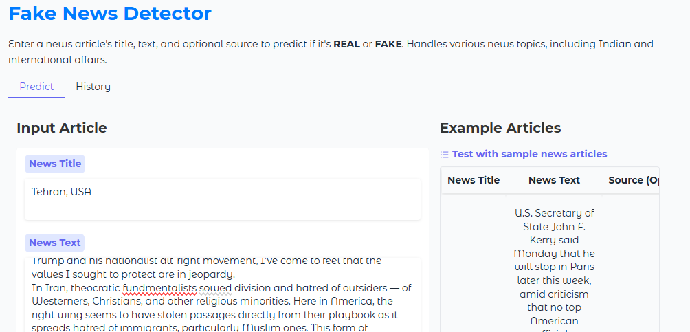
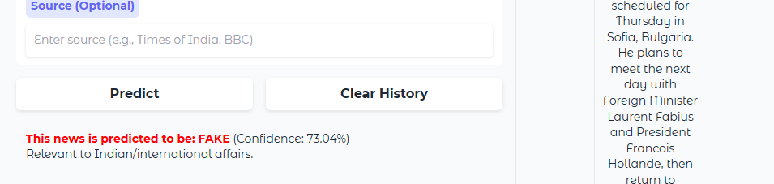

Third Year IT Student | Aspiring Quantitative Researcher | CGPA: 8.74
I am a third-year Information Technology student at IET-DAVV with a deep interest in the intersection of Mathematics, Data Science, and Financial Engineering. With a strong academic foundation in Numerical Optimization and Applied Statistics, I specialize in translating complex mathematical models into efficient, functional code.
My technical journey includes developing NLP-based detection systems and ML-driven data visualization frameworks. I am currently focused on advancing my skills in Stochastic Modeling and Computational Finance, with the goal of pursuing a Master’s in Financial Engineering for the Fall 2027 intake.
I am driven by rigorous analytical challenges and am eager to contribute to research-intensive environments that push the boundaries of data-driven decision-making.
Institute of Engineering & Technology (IET), DAVV, Indore | 2023 – 2027
Current Aggregate CGPA: 8.74 / 10.0


Email: upasaniatharva666@gmail.com
LinkedIn: linkedin.com/in/atharva-upasani